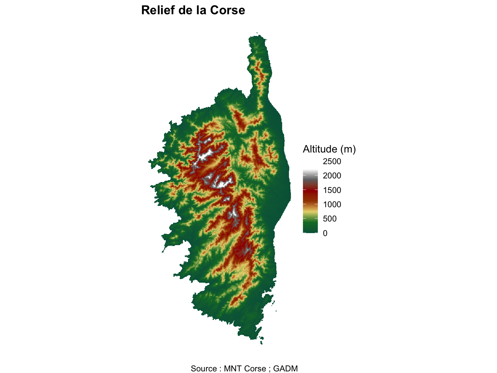
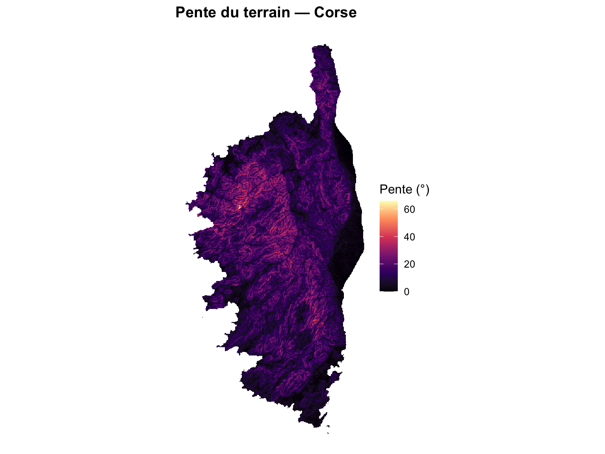
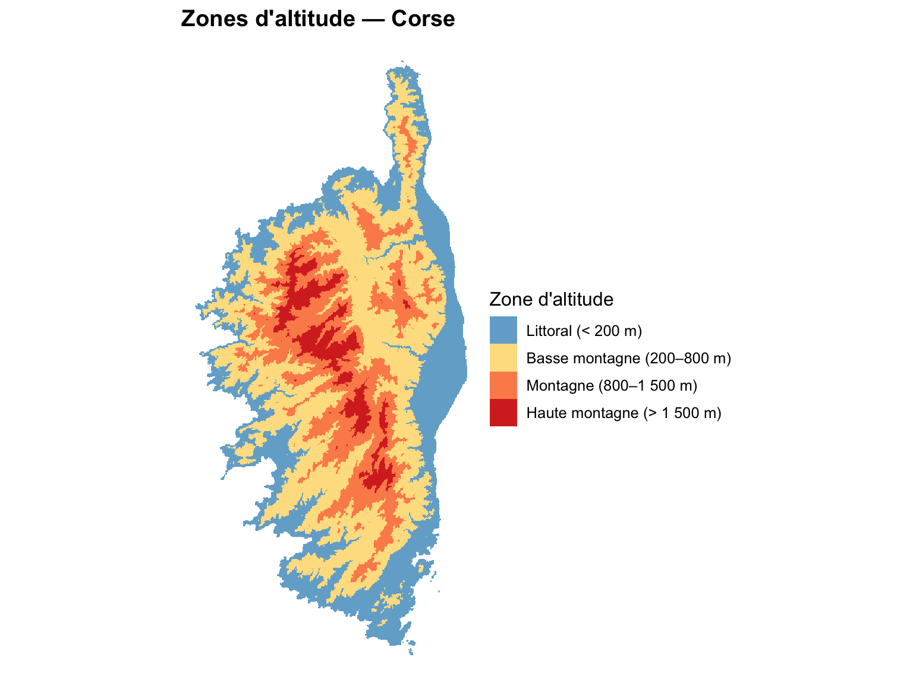
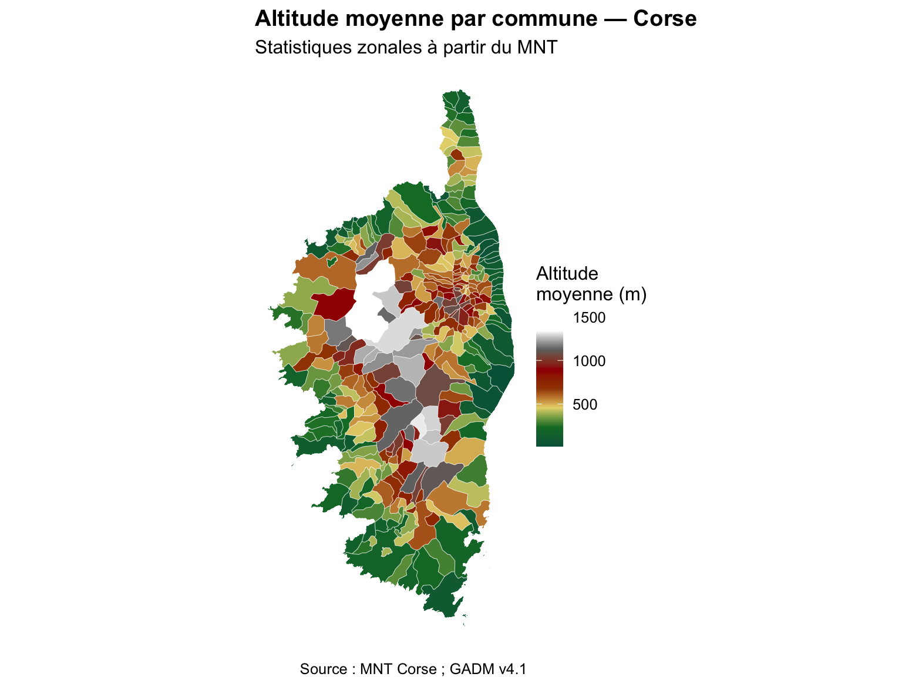
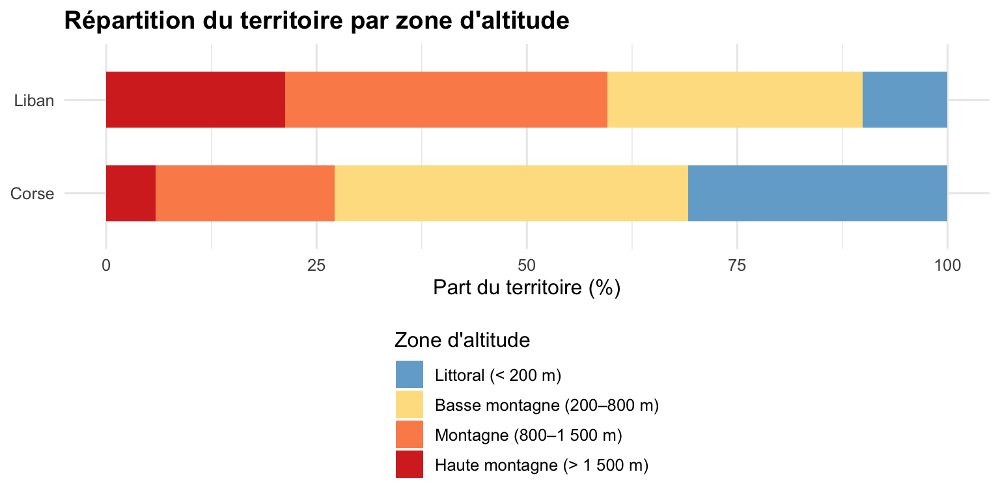

library(terra) # manipulation des rasters
library(tidyterra) # geom_spatraster() et palettes pour ggplot2
library(sf) # données vectorielles
library(ggplot2) # visualisation
library(dplyr) # manipulation de données
library(exactextractr) # statistiques zonales
terraOptions(progress = 0) # masquer les barres de progression de terra13 Raster : Corse
ImportantCorrigé — à consulter après avoir essayé par vous-mêmes
Ce document contient les réponses complètes à l’exercice Corse posé à la fin de Raster : relief du Liban. Essayez d’abord par vous-mêmes avant de consulter ce corrigé.
13.1 Préparer les objets du Liban
L’exercice se termine par une comparaison avec le Liban. Comme chaque chapitre s’exécute séparément, on recrée d’abord les objets du Liban nécessaires (MNT, pente et zones d’altitude), exactement comme dans Raster : relief du Liban.
Code : MNT, pente et zones du Liban
liban <- read_sf("data/Liban/LBN_adm1.shp")
dem_lb <- rast("data/Liban/LBN_elevation_w_bathymetry.tif") |>
project(crs(vect(liban))) |>
crop(vect(liban)) |>
mask(vect(liban))
pente_lb <- terrain(dem_lb, v = "slope", unit = "degrees")
rcl <- matrix(c(
-Inf, 200, 1, # Littoral
200, 800, 2, # Basse montagne
800, 1500, 3, # Montagne
1500, Inf, 4 # Haute montagne
), ncol = 3, byrow = TRUE)
zones_lb <- classify(dem_lb, rcl)
noms_zones <- c("1" = "Littoral (< 200 m)",
"2" = "Basse montagne (200–800 m)",
"3" = "Montagne (800–1 500 m)",
"4" = "Haute montagne (> 1 500 m)")
couleurs_zones <- c("1" = "#74add1", "2" = "#fee090",
"3" = "#fc8d59", "4" = "#d73027")La Corse présente un relief comparable au Liban : une côte méditerranéenne et un massif montagneux qui culmine au Monte Cinto (2 706 m).
Fichiers utilisés :
| Fichier | Description |
|---|---|
data/France/Corse/Corse_tout_lambert.tif |
MNT de la Corse, en Lambert 93 (mètres) |
data/France/gadm41_FRA_shp/gadm41_FRA_5.shp |
Communes de France (GADM, niveau 5) |
13.2 Exercice 1 — Charger et explorer le MNT
Chargez le MNT de la Corse. Quel est son SCR ? Sa résolution ? Combien de cellules contient-il ? Comparez avec le Liban.
dem_co <- rast("data/France/Corse/Corse_tout_lambert.tif")
dem_coclass : SpatRaster
size : 8602, 6691, 1 (nrow, ncol, nlyr)
resolution : 27.27336, 27.27336 (x, y)
extent : 1107784, 1290270, 6001901, 6236506 (xmin, xmax, ymin, ymax)
coord. ref. : RGF93 v1 / Lambert-93 (EPSG:2154)
source : Corse_tout_lambert.tif
name : Corse_tout_lambert ncell(dem_co) # nombre de cellules[1] 57555982Le MNT est déjà en Lambert 93 (EPSG:2154), en mètres : pas besoin de le reprojeter. Mais sa résolution est d’environ 27 m, contre environ 250 m pour le Liban, et il compte plus de 57 millions de cellules, ce qui rendra certains calculs lents.
13.3 Exercice 2 — Harmoniser la résolution
Pour comparer les deux territoires, il faut travailler à la même résolution : une pente calculée sur des cellules de 27 m n’est pas comparable à une pente calculée sur des cellules de 250 m (plus les cellules sont fines, plus on capte de pentes fortes). Utilisez aggregate() pour ramener le MNT corse à une résolution proche de celle du Liban.
# fact = 9 : on regroupe 9 × 9 cellules de 27 m en une cellule d'environ 245 m,
# dont la valeur est la moyenne des 81 cellules d'origine
dem_co <- aggregate(dem_co, fact = 9, fun = "mean")
res(dem_co)[1] 245.4602 245.4602ncell(dem_co)[1] 711264Le raster est maintenant environ 80 fois plus léger, et directement comparable au Liban.
NoteEt si le MNT était découpé en tuiles ?
Les MNT à haute résolution sont souvent distribués en tuiles (DEM_corse_1.tif à DEM_corse_4.tif dans le dossier). On les assemble avec mosaic(t1, t2, t3, t4, fun = "mean") : la fonction "mean" s’applique aux cellules qui se chevauchent sur les bords.
13.4 Exercice 3 — Recadrer et masquer
Chargez les communes de France, gardez celles de la Corse (NAME_1 == "Corse"), mettez-les dans le SCR du MNT, puis recadrez et masquez le MNT.
communes_co <- read_sf("data/France/gadm41_FRA_shp/gadm41_FRA_5.shp") |>
filter(NAME_1 == "Corse") |>
st_transform(crs(dem_co)) # GADM est en WGS 84 : on passe en Lambert 93
nrow(communes_co) # 360 communes[1] 360dem_co <- crop(dem_co, vect(communes_co)) |>
mask(vect(communes_co))Ici, on reprojette le vecteur plutôt que le raster : c’est sans perte, et le raster est déjà dans un SCR en mètres.
13.5 Exercice 4 — Cartographier le relief
Réalisez une carte hypsométrique du MNT corse, avec un titre et une source.
ggplot() +
geom_spatraster(data = dem_co) +
scale_fill_hypso_c(palette = "dem_poster", na.value = NA,
name = "Altitude (m)") +
labs(title = "Relief de la Corse",
caption = "Source : MNT Corse ; GADM") +
theme_void(base_size = 12) +
theme(plot.title = element_text(face = "bold"))
13.6 Exercice 5 — Calculer la pente
Calculez la pente en degrés, puis sa moyenne et son maximum. Pourquoi peut-on la calculer directement sur ce MNT ?
pente_co <- terrain(dem_co, v = "slope", unit = "degrees")
global(pente_co, c("mean", "max"), na.rm = TRUE) mean max
slope 12.76316 65.97884ggplot() +
geom_spatraster(data = pente_co) +
scale_fill_viridis_c(option = "magma", na.value = NA, name = "Pente (°)") +
labs(title = "Pente du terrain — Corse") +
theme_void(base_size = 12) +
theme(plot.title = element_text(face = "bold"))
On peut la calculer directement car le MNT est en Lambert 93, donc en mètres : altitude et distances horizontales ont la même unité.
13.7 Exercice 6 — Reclassifier en zones d’altitude
Reclassifiez le MNT avec la même matrice rcl que pour le Liban, puis calculez la part de chaque zone.
zones_co <- classify(dem_co, rcl) # même matrice que pour le Liban
freq(zones_co) |>
mutate(zone = noms_zones[as.character(value)],
part = round(count / sum(count) * 100, 1)) |>
select(zone, part) zone part
1 Littoral (< 200 m) 30.8
2 Basse montagne (200–800 m) 42.0
3 Montagne (800–1 500 m) 21.3
4 Haute montagne (> 1 500 m) 5.9ggplot() +
geom_spatraster(data = as.factor(zones_co)) +
scale_fill_manual(values = couleurs_zones, labels = noms_zones,
na.value = NA, na.translate = FALSE,
name = "Zone d'altitude") +
labs(title = "Zones d'altitude — Corse") +
theme_void(base_size = 12) +
theme(plot.title = element_text(face = "bold"))
13.8 Exercice 7 — Statistiques zonales par commune
Calculez l’altitude moyenne de chaque commune corse avec exact_extract(), puis cartographiez-la. Quelles sont les communes les plus hautes ?
communes_co$alt_moy <- exact_extract(dem_co, communes_co, "mean", progress = FALSE)
communes_co |>
st_drop_geometry() |>
select(NAME_5, alt_moy) |>
arrange(desc(alt_moy)) |>
head(5)# A tibble: 5 × 2
NAME_5 alt_moy
<chr> <dbl>
1 Lozzi 1561.
2 Casamaccioli 1524.
3 Albertacce 1437.
4 Asco 1380.
5 Ciamannacce 1316.ggplot(communes_co) +
geom_sf(aes(fill = alt_moy), colour = "white", linewidth = 0.1) +
scale_fill_hypso_c(palette = "dem_poster", name = "Altitude\nmoyenne (m)") +
labs(title = "Altitude moyenne par commune — Corse",
subtitle = "Statistiques zonales à partir du MNT",
caption = "Source : MNT Corse ; GADM v4.1") +
theme_void(base_size = 12) +
theme(plot.title = element_text(face = "bold"))
Avec 360 communes, la carte est beaucoup plus détaillée que celle des gouvernorats libanais : le choix des unités spatiales change ce que la carte montre.
13.9 Exercice 8 — Comparer le Liban et la Corse
13.9.1 Un tableau de synthèse
Les deux MNT sont maintenant à une résolution comparable (environ 250 m), dans des SCR en mètres, et reclassifiés avec les mêmes seuils : on peut les comparer.
synthese <- data.frame(
territoire = c("Liban", "Corse"),
alt_moy = c(global(dem_lb, "mean", na.rm = TRUE)[[1]],
global(dem_co, "mean", na.rm = TRUE)[[1]]),
alt_max = c(global(dem_lb, "max", na.rm = TRUE)[[1]],
global(dem_co, "max", na.rm = TRUE)[[1]]),
pente_moy = c(global(pente_lb, "mean", na.rm = TRUE)[[1]],
global(pente_co, "mean", na.rm = TRUE)[[1]]),
# surface = nombre de cellules non vides × surface d'une cellule (en km²)
surface_km2 = c(global(!is.na(dem_lb), "sum")[[1]] * prod(res(dem_lb)) / 1e6,
global(!is.na(dem_co), "sum")[[1]] * prod(res(dem_co)) / 1e6)
)
knitr::kable(synthese, digits = c(0, 0, 0, 1, 0),
col.names = c("Territoire", "Altitude moy. (m)", "Altitude max. (m)",
"Pente moy. (°)", "Surface (km²)"),
caption = "Comparaison topographique Liban / Corse")| Territoire | Altitude moy. (m) | Altitude max. (m) | Pente moy. (°) | Surface (km²) |
|---|---|---|---|---|
| Liban | 991 | 3058 | 7.8 | 10202 |
| Corse | 555 | 2583 | 12.8 | 8915 |
13.9.2 Comparer les zones d’altitude
parts <- bind_rows(
freq(zones_lb) |> mutate(territoire = "Liban"),
freq(zones_co) |> mutate(territoire = "Corse")
) |>
group_by(territoire) |>
mutate(part = count / sum(count) * 100,
zone = factor(noms_zones[as.character(value)], levels = noms_zones)) |>
ungroup()
ggplot(parts, aes(x = territoire, y = part, fill = zone)) +
geom_col(width = 0.6) +
scale_fill_manual(values = setNames(couleurs_zones, noms_zones),
name = "Zone d'altitude") +
labs(x = NULL, y = "Part du territoire (%)",
title = "Répartition du territoire par zone d'altitude") +
coord_flip() +
theme_minimal(base_size = 12) +
theme(plot.title = element_text(face = "bold"),
legend.position = "bottom", legend.direction = "vertical")
NoteÀ discuter
- Lequel des deux territoires est le plus montagneux ? Le plus escarpé ? Est-ce la même chose ?
- La surface calculée à partir des cellules est-elle exactement celle des sources officielles (Liban : 10 452 km² ; Corse : 8 680 km²) ? Pourquoi pas ?
- L’altitude maximale de la Corse dans le tableau est inférieure à celle du Monte Cinto (2 706 m). Pourquoi ? (Indice : que fait
aggregate(fun = "mean")aux sommets ?) - Que se passerait-il si l’on comparait la pente du Liban (cellules de 250 m) à celle de la Corse sans agréger le MNT corse (cellules de 27 m) ?
← Retour au cours : Raster : relief du Liban
Dr. Elisabetta Pietrostefani — Directrice Adjointe, Geographic Data Science Lab — Université de Liverpool | Co-Directrice, Imago : Data Service for Imagery | Chercheuse Associée, London School of Economics